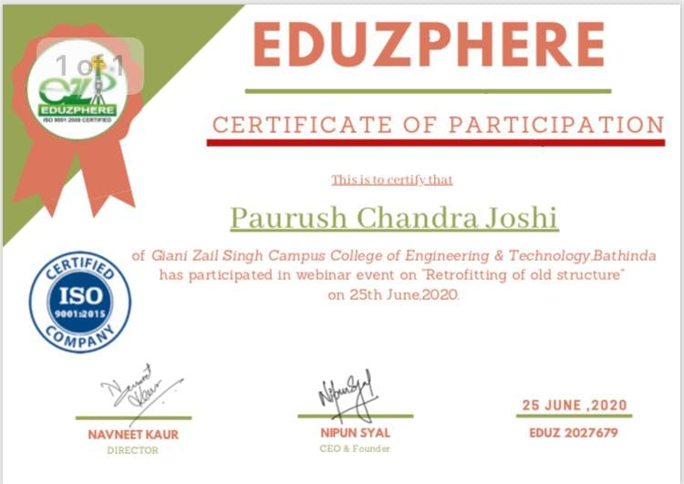

Paurush Chandra Joshi
Civil Engineer
I am a dedicated and results-oriented civil engineer with expertise in construction technology and management. My passion lies in working on challenging projects that allow me to learn, innovate, and enhance my skills. With a Master's degree in Construction Technology & Management and a Bachelor's degree in Civil Engineering, I have a strong foundation in the field.
I have published research papers in reputed journals, exploring topics such as the replacement of cement with fly ash and coarse aggregate with coconut shell in concrete. Moreover, my Master's thesis focused on the experimental study of partial replacement of coarse aggregate with coconut shell in concrete. These projects have given me a deep understanding of material properties and their impact on construction.
My computer knowledge includes proficiency in Autocad and Staad Pro, and with ongoing learning in Primavera, Linux, Git, Revit, and 3D Max. I also have a basic understanding of MS Office and other computer applications.
With a keen interest in project management, planning, and design structures, I am equipped with skills such as working under pressure, decision making, self-motivation, teamwork, and time management. My leadership abilities and loyalty contribute to my professional approach.
Outside of work, I am also a social worker, I have a Group called Unity. As a social worker, I am committed to serving the needs of the less fortunate. I offer support by collecting and donating clothes, providing free tutoring to underprivileged children, and organizing blood donation campaigns.
I am constantly seeking new challenges and opportunities to apply my expertise and continue my professional growth. Let's connect and explore how we can collaborate to create innovative solutions in the field of civil engineering and construction.
Published Papers
Advances in Civil and Structural Engineering
Topic:Replacement of Cement with Fly ash and Coarse Aggregate with Coconut Shell in Concrete; A Litrature Review
International Journal of Advance Civil Engineering and Technology
Topic: A Litrature Review on the Partial Replacement of Cement with Rice husk ash in Concrete.
Journal of Research in Civil and Architectural Engineering
Topic: Effect of Partial Replacement of Coarse Aggregate by Coconut Shell on the compressive strength of Concrete
International Journal of Scientific Research in Engineering and Management (IJSREM)
Topic:Effect Of Partial Replacement Of Cement with Fly ash and Coarse Aggregate with Coconut Shell in Concrete (MAJOR PROJECT)
Certificates

